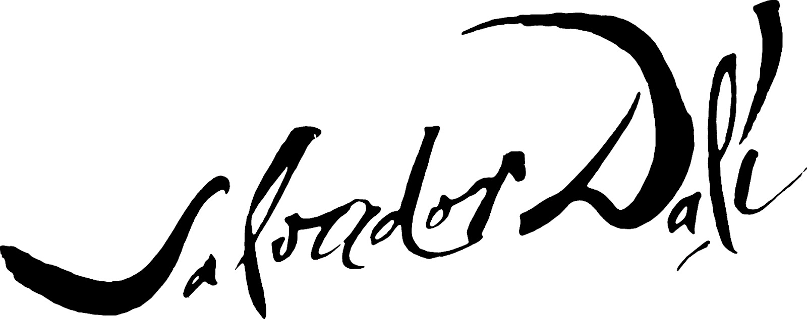

8 obras que cambiaron la historia del arte y dieron fama al más grande artista surrealista de todos los tiempos
Instrucciones:
A la izquierda puedes ver las 8 grandes obras de Salvador Dalí, puedes arrastrar la que quieras manteniendo pulsado el click y moviendola a donde desees.
Pulsa un sólo click sobre cualquier obra para expandirla y ver la información.
Pulsa de nuevo sobre la obra para cerrarla y volver a este instructivo.
La persistencia de la memoria
1931
El paisaje es simple; aparece el mar al fondo y una pequeña formación rocosa a la derecha de forma insólita. En primer plano a la izquierda, se observa un bloque probablemente de cartón tejido a mano, que hace las funciones de una mesa, sobre el que se disponen dos relojes, un árbol y en el centro de la obra aparece una extraña figura que simula una cabeza blanda, cuyo cuello se diluye en la oscuridad.
Llama la atención la enorme nariz, la especie de lengua que sale de ella y el ojo cerrado con largas pestañas. La figura parece dormir sobre la arena.
El artista ha colocado sobre esta figura un cuarto reloj, igualmente blando y que también parece derretirse o escurrirse. Los elementos anteriormente descritos se ambientan en lo que parece una playa desierta, con el mar y una cala rodeadaa de acantilados al fondo. El cielo y el mar se confunden.
Cisnes que se reflejan como elefantes
1937
Cisnes que se reflejan como elefantes emplea el reflejo en un lago para crear la imagen doble del cuadro. Tres cisnes están delante de árboles y, en el reflejo, los cisnes son las cabezas de los elefantes y los árboles son los cuerpos. El fondo del cuadro es un paisaje catalán representado en colores de otoño, el manejo del pincel creando remolinos en los precipicios circundantes del lago, para contrastar con la quietud del agua.
En la segunda guerra mundial, esta obra fue expoliada por el ejército alemán durante la ocupación francesa y permaneció almacenada en el museo Jeu de Paume de París en la llamada "salle des martyrs" entre 1940-1944. Hoy el cuadro pertenece a Cavaliere Holding, Co., Inc., en Ginebra, Suiza.2
El gran masturbador
1929
Este cuadro tiene las características de toda su pintura surrealista y posee una unidad equilibrada a pesar del gran número de elementos que presenta. Refleja el malestar del autor que temía, incluso, perder la cordura. Tanto el título, como el motivo central no dejan dudas sobre las implicaciones sexuales del cuadro; el sexo era una de las obsesiones del pintor.
Su encuentro con Elena Diákonova, nombre original de la que a partir de ese momento se convertirá en su gran musa, le cambia y da como fruto esta obra, símbolo por excelencia de sus obsesiones sexuales.
Cristo de San Juan de la cruz
1951
La originalidad de la perspectiva y la habilidad técnica a la hora de pintar el cuadro lo han hecho muy popular. Dalí se inspiró de un dibujo del místico San Juan de la Cruz conservado en el convento de la Encarnación de Ávila y en una imagen que decía haber soñado de un círculo dentro de un triángulo. Esta figura, que según él era como el núcleo del átomo, era similar al dibujo del monasterio, así que decidió usarla en el cuadro.
El paisaje en calma se inspira en Port Lligat y en un dibujo de Diego Velázquez para la rendición de Breda. Los pescadores están inspirados en una pintura de Le Nain.
Construcción blanda con judías hervidas
1936
Esta obra es una de las más agresivas pintadas en toda la historia. Muestra el horror de la Guerra Civil Española que se inició en el año en que fue pintada. En realidad, Dalí terminó la obra seis meses antes del estallido de la guerra y, hasta que ocurrió este acontecimiento, la pintura no tuvo el subtítulo "Premonición de la Guerra Civil". Aun así, Dalí parece ya saber que la posibilidad de una guerra era inminente, y pinta un monstruo amorfo de carnes que se estrangulan unas con otras.
La figura está constituida por una pierna y una extremidad de la que surge otra. Estas dos partes se intentan despedazar. Debajo del monstruo amorfo hay un pie, el cual tiene un dedo de gran tamaño. Arriba se encuentra una cabeza sonriente inclinada hacia arriba, pareciendo ser cegada por el Sol. Esta cabeza recuerda mucho la pintura de Goya Saturno devorando a sus hijos, de carácter sombrío y terrorífico.
La metamorfosis de Narciso
1937
La obra nos muestra a Narciso, un personaje de la mitología de la Grecia Clásica. Un personaje que se enamoró de su propia imagen al verla reflejada en el agua y que se ahogó intentando alcanzarla. Sin embargo, los dioses del Olimpo inmortalizaron su imagen convirtiéndolo en una bella flor: el narciso.
En la imagen de Dalí se puede ver como la figura de Narciso se transforma en una mano osificada, de piedra, y de esa muerte resurge la vida. Pero además los dedos de esa mano pétrea (a la derecha) en los que se ha convertido la imagen humana de Narciso (a la izquierda) sostienen un huevo que sería la cabeza, pero además es el símbolo del seno materno del que brota una flor. Es decir, en esta imagen están muchos de los elementos simbólicos y con doble sentido de la pintura daliniana, y por supuesto prácticamente se puede considerar a esta imagen como un verdadero autorretrato del artista, sin duda alguna, uno de los mayores narcisistas que ha dado toda la Historia de la pintura.
Galatea de las esferas
1952
la obra muestra un busto de Gala compuesto por una matriz de esferas aparentemente suspendidas en el espacio. Representa la síntesis del arte Renacentista y la teoría atómica e ilustra la discontinuidad de la materia, las esferas por sí solas, representan partículas atómicas.
Dalí había estado interesado en la física nuclear desde las explosiones de la primera bomba atómica en agosto de 1945, y había descrito el átomo como su cosa favorita para reflexionar. Observando que la materia estaba compuesta de átomos que no llegaban a tocarse, ya había replicado esto en su arte , con elementos suspendidos sin mantener contacto alguno entre ellos.
Esta obra también fue simbólica en su intento por reconciliar su fe en el Catolicismo con la física nuclear. Su amigo y pintor Antoni Pitxot, remarcó que Dalí tenía muy en cuenta la profundidad de la perspectiva en la pintura y en las esferas que había pintado.
Sueño causado por el vuelo de una abeja alrededor de una granada un segundo antes de despertar
1944
Dalí, siguiendo las teorías de Freud, quiso representar en el cuadro el hecho de que, a veces, se introducen en el sueño estímulos derivados de acontecimientos exteriores que son integrados en él. También se ha sugerido que la pintura es "una surrealista interpretación de la Teoría de la Evolución".
A pesar de que por aquel entonces pintaba sobre temas religiosos y había abandonado el surrealismo ortodoxo, en donde se introducía en el mundo de los sueños, el largo título del lienzo muestra su intención de otorgarle al cuadro un carácter psicoanalítico.